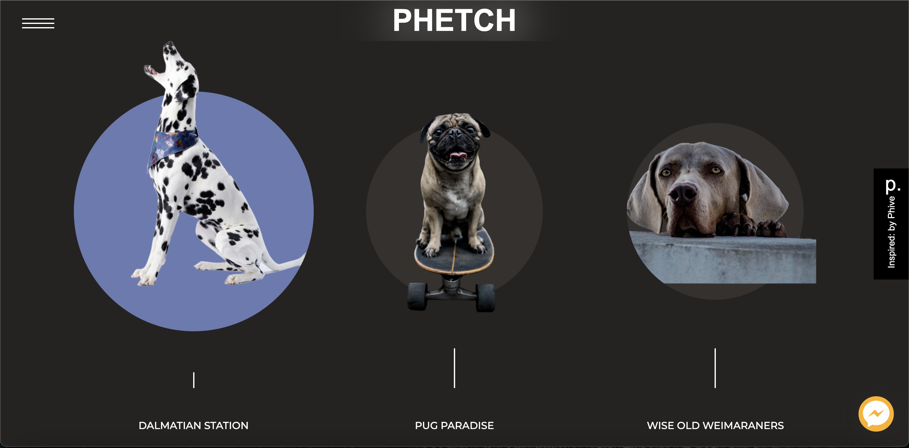
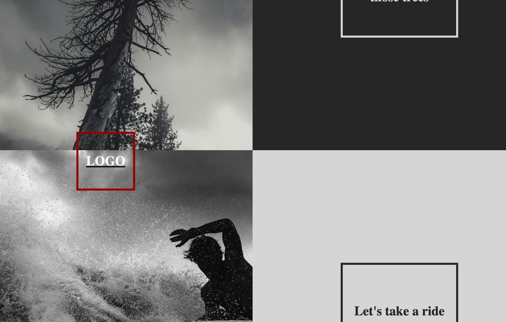

A DOG RENTAL AGENCY

A powerful website design with dynamic and smooth animations and effects. Inspired by a Portuguese fitness site called Phive, but built entirely from scratch with no outside libraries. Phetch takes an ironic approach to what a high-end dog rental agency might look like.
Maximizing the Terminal Experience

An app built to request airport-related information from various APIs. This includes airport transit APIs, local traffic APIs, location-based yelp page APIs and terminal maps to boot. This will return information for a given airport on a given day the expected Security wait times, traffic delays, cancelled flights, the best airport restaurants and cafes, and a map of the terminal. I am still in the development process with the various API's. As such, the requested API data features will be available later. The layout is meant to be light, clean and to the point.
Sleek, smooth, image-focused scrolling

A reactive and dynamic parallax shuffle scrolling with example pictures and logos. Built from scratch without any outside libraries and inspired by Phive's website design.
Light, bright, and unorthodox

Interactive sibling bubble elements that move in response to hovering, and ul dropdowns that experiment with nth-child and transition delays.

Let go of your inhibitions and get lost an endless display of gorgeous dogs. Endless images of every conceivable dog breed. The only limit is how long you have to spend on this page...